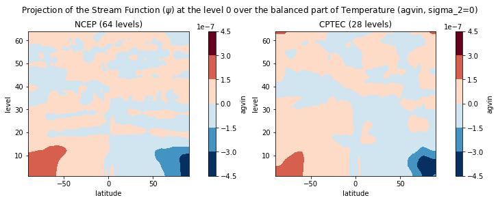
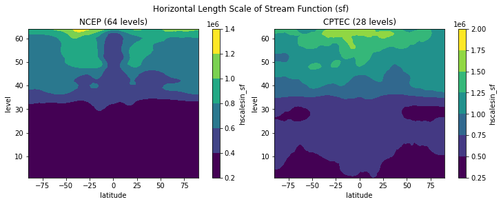
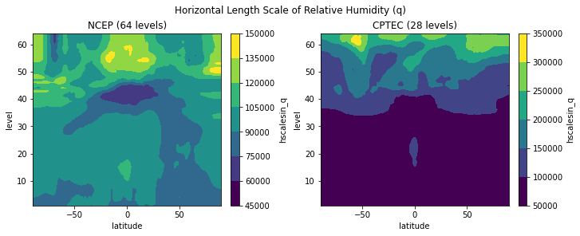

Usage
This page presents some usage examples of the Berror class from the GSIBerror package. These examples consider two different background error covariances matrices - one provided by the Developmental Testbed Center (DTC) and another calculated by using pairs of 48 and 24-hours forecasts from the Braziliand Atmospheric Model (BAM) from the Center for Weather Forecasts and Climate Studies (CPTEC)1, using the NMC method.
Info
A version of this page for the Juptyter Notebook can be found at https://github.com/GAD-DIMNT-CPTEC/GSIBerror/blob/main/notebooks/read_gsi_berror_python-class-final-en.ipynb.
If you want to interact with the notebook, click on the button below to open Google Colab.

The Berror class
To use the class, load it with the following command:
1 | |
The following python modules are optional and can be loaded in case the user wants to plot the matrix records. The module cartopy is loaded to plot the coastlines for the records related to sst (sea surface temperature) only, since the remainder of the records are latitude-dependent.
1 2 3 4 | |
Info
In the repository, there is a script called plot_functions.py where some auxiliary ploting functions are implemented to use along with the Berror class. See an example of its usage in the notebook read_gsi_berror_python-class-final-BCPTEC_hyb_coord.ipynb.
Defining the covariance files
In the following section, the file to be read is defined. In this example, two matrices are handled at the same time, fncep (the DTC matrix) and fcptec (the CPTEC matrix). Both matrices have different dimensions, which will be further inspected:
1 2 3 4 5 6 7 | |
Warning
The path variable must the set up by the user to reflect the correct path to where the matrices files gsir4.berror_stats.gcv.BAM.TQ0062L028 and global_berror.l64y386.f77-ncep-dtc.gcv are.
Tip
In the data directory on the the repository, check the matrices files bcptec_bam_352pairs_gsir4.berror_stats.fix.oz.cw.tsm.gcv, global_berror.l64y386.f77-ncep-dtc.gcv and new_gsir4.berror_stats-tese-cfbastarz2017.gcv, which can be used to test the GSIBerror package.
Using the Berror class
To use the class, it is necessary to create instances for each of the matrices to be read:
1 2 | |
The read_records method
The read_records method is used to read all the records (ie., horizontal regression coefficients, vertical and horizontal lenght scales and standard deviations) from the matrices and their attributes (ie., number of latitude, longitude and vertical levels). The documentation of this method can be accessed by using the following command:
1 | |
1 2 3 4 5 6 7 8 9 10 11 12 13 14 15 16 17 18 19 20 21 22 23 24 25 26 27 28 29 30 31 32 33 34 35 36 37 38 39 40 41 42 43 44 45 46 47 48 49 50 51 52 53 54 | |
To read the records and attributes from the matrices through the instances ncep_b and cptec_b:
1 2 | |
Checking the matrix attributes
The background error covariance used by GSI has some records that can be checked by through the Berror class.
Matrix dimension
To check the matrices attributes, just use the class instance for the desired matrix with one of the following attribute names:
nlat: number of latitude points;nlon: number of longitude points;nlev: number of vertical levels.
1 | |
1 | |
Doing the same for the cptec_b instance:
1 | |
1 | |
Horizontal regression coefficients
To check the matrices attributes, use the class instance for the desired matrix with one of the following attribute names:
balprojs: horizontal regression coefficients;amplitudes: standard deviations of the GSI control variables;hscales: horizontal length scales;vscales: vertical length scales.
1 | |
1 2 3 4 5 6 7 8 9 10 11 12 13 14 15 16 17 18 19 20 21 22 23 24 25 26 27 28 29 30 31 32 33 34 35 36 37 38 39 40 41 42 43 44 45 46 47 48 49 50 51 52 53 54 55 56 57 58 59 60 61 62 63 64 65 66 67 68 69 70 71 72 73 74 75 76 77 78 79 80 | |
Note that the balprojs records are stored in a dictionary with three keys: agvin, bgvin and wgvin. These are the horizontal regression coefficients used by GSI to construct the balanced part of the temperature, potential velocity and surface pressure, respectively:
agvin: horizontal regression coefficients for the temperature;bgvin: horizontal regression coefficients for the velocity potential;wgvin: horizontal regression coefficients for the surface pressure.
Quoting the GSI manual2:
Because of the size of the model variables, the full size of a B matrix is extremely large. It is typically on the order of \(10^{6} \times 10^{6}\), which in its present form cannot be stored in any computer. This problem is simplified by using an ideal set of analysis variables for which the analysis is performed. These are generally referred to as "analysis control variables". The analysis control variables are selected such that the cross-correlations between these variables are minimum, which means less off-diagonal terms in B. The cross dependency among these analysis control variables is removed. The balance between analysis variables (such as mass and wind fields) are achieved with pre-computed "regression coefficients". Further, the forecast errors are modeled as a Gaussian distribution with pre-computed variances and "lengthscale" parameters for each of the analysis control variables. We will use the following sub-sections to briefly introduce how GSI processes these pre-computed background error statistics and applies them in a GSI analysis.
These records with the horizontal regression coefficients can be accessed in the following way:
1 | |
1 2 3 4 5 6 7 8 9 10 11 12 13 14 15 16 17 18 19 20 21 22 23 24 25 26 27 28 29 30 31 32 33 34 35 36 37 38 39 40 41 42 43 44 45 46 | |
For the bgvin:
1 | |
1 2 3 4 5 6 7 8 9 10 11 12 13 14 15 16 17 | |
For the wgvin:
1 | |
1 2 3 4 5 6 7 8 9 10 11 12 13 14 15 16 17 | |
To retrieve the min and max values, e.g., from the horizontal regression coefficients of the velocity potential (bgvin), use either the min() or max() methods from the xarray module:
1 | |
1 2 | |
And for max():
1 | |
1 2 | |
In a more direct way:
1 | |
1 | |
To plot the horizontal regression coefficients for the velocity potential bgvin, just use the plot() method from the xarray module:
1 | |

For the cptec_b instance:
1 | |

To compare the horizontal regression coefficients for the instantiated matrices ncep_b and cptec_b, see the next examples.
Note that the horizontal regression coefficients for the temperature agvin have an extra dimension named level_2. This extra dimension needs to be set for one of the levels contained in the instances. Use the attribute levs to retrieve the possible values for each instance. By using isel(level_2=0), the first level, next to the surface, is chosen, and by using isel(level_2=-1), the last level, next to the model top, is chosen.
1 2 3 4 5 6 7 8 9 10 | |

And for the last level, for both matrices:
1 2 3 4 5 6 7 8 9 10 | |

For the bgvin record:
1 2 3 4 5 6 7 8 9 10 | |
For the wgvin record:
1 2 3 4 5 6 7 8 9 10 | |

Amplitudes (standard deviations)
To check and compare the amplitudes from the instances ncep_b and cptec_b, see the next examples.
Warning
The records of ozone, cloud water and sea surface temperature (amplitudes and horizontal/vertical length scales) are intentionally the same for both matrices displayed in this notebook. In fact, the CPTEC B matrix borrows these records from the NCEP B matrix (provides by the Developmental Testbed Center - DTC) for testing purposes.
1 2 3 4 5 6 7 8 9 10 | |

In the following example, vertical profiles from the amplitudes of the streamfunction sf from the instances ncep_b and cptec_b are compared:
1 2 3 4 5 6 7 8 9 10 | |
For the velocity potential (vp):
1 2 3 4 5 6 7 8 9 10 | |

For the vertical profile of the velocity potential (vp):
1 2 3 4 5 6 7 8 9 10 | |

For the temperature (t):
1 2 3 4 5 6 7 8 9 10 | |
For the vertical profile of the temperature (t):
1 2 3 4 5 6 7 8 9 10 | |

For the relative humidity (q):
1 2 3 4 5 6 7 8 9 10 | |

For the vertical profile of the relative humidity (q):
1 2 3 4 5 6 7 8 9 10 | |

For the ozone (oz):
1 2 3 4 5 6 7 8 9 10 | |

For the vertical profile of the ozone (oz):
1 2 3 4 5 6 7 8 9 10 | |
For the cloud water content (cw):
1 2 3 4 5 6 7 8 9 10 | |

For the vertical profile of the cloud water content (cw):
1 2 3 4 5 6 7 8 9 10 | |

For the surface pressure (ps):
1 2 3 4 5 6 7 8 9 10 | |

In the next figures, the amplitudes of the sea surface temperature (sst) for the instances ncep_b and cptec_b are shown.
1 2 3 4 5 6 7 8 9 10 11 12 13 14 15 16 17 18 19 | |

Horizontal length scales
In the same manner we did for the amplitudes, the horizontal length scales from the instances ncep_b and cptec_b can also be compared. See the next examples.
1 2 3 4 5 6 7 8 9 10 | |

For the velocity potential (vp):
1 2 3 4 5 6 7 8 9 10 | |

For the temperature (t):
1 2 3 4 5 6 7 8 9 10 | |

For the relative humidity (q):
1 2 3 4 5 6 7 8 9 10 | |

For the ozone (oz):
1 2 3 4 5 6 7 8 9 10 | |

For the surface pressure (ps):
1 2 3 4 5 6 7 8 9 10 | |

For the sea surface temperature (sst):
1 2 3 4 5 6 7 8 9 10 11 12 13 14 15 16 17 18 19 | |

Vertical length scales
In the same manner we did for the amplitudes, the vertical length scales from the instances ncep_b and cptec_b can also be compared. See the next examples.
1 2 3 4 5 6 7 8 9 10 | |

For the velocity potential (vp):
1 2 3 4 5 6 7 8 9 10 | |

For the temperature (t):
1 2 3 4 5 6 7 8 9 10 | |
For the relative humidity (q):
1 2 3 4 5 6 7 8 9 10 | |

For the ozone (oz):
1 2 3 4 5 6 7 8 9 10 | |

For the cloud water content (cw):
1 2 3 4 5 6 7 8 9 10 | |

-
Matriz de Covariâncias dos Erros de Previsão Aplicada ao Sistema de Assimilação de Dados Global do CPTEC: Experimentos com Observação Única. Disponível em: https://www.scielo.br/j/rbmet/a/8LQNdCV9jJM9whJdpkDLfCh/abstract/?lang=pt&format=html. ↩
-
Available at https://dtcenter.org/community-code/gridpoint-statistical-interpolation-gsi/documentation. ↩